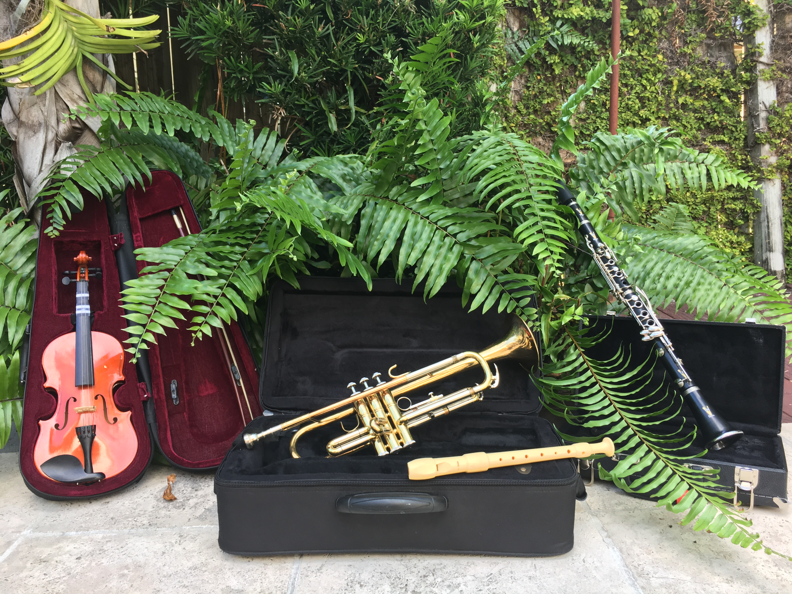
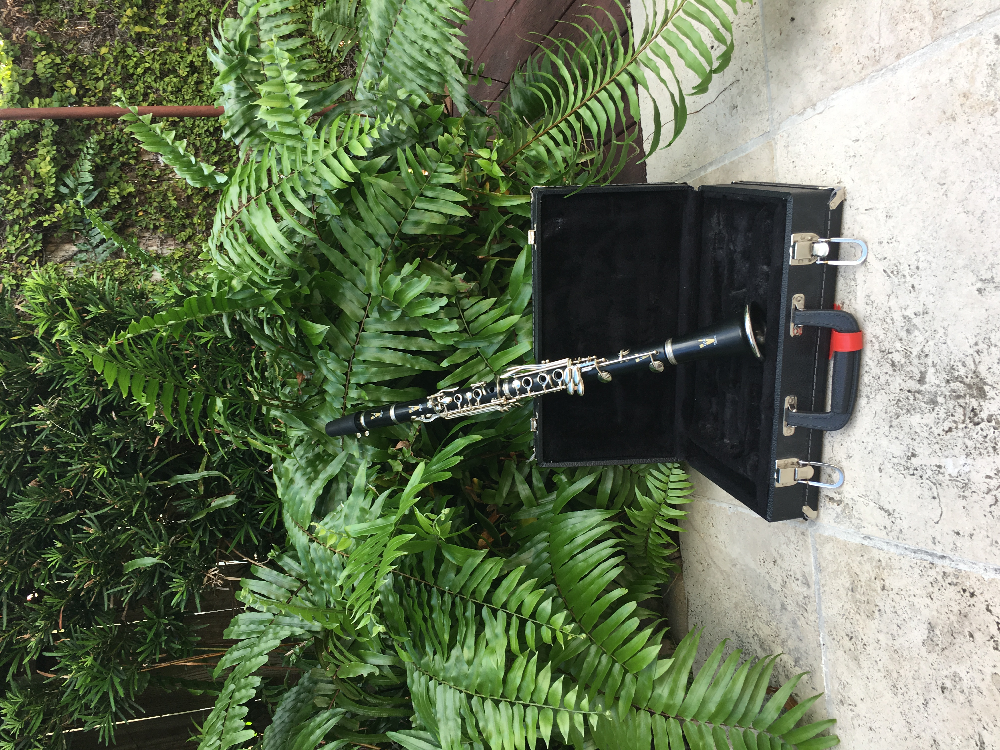
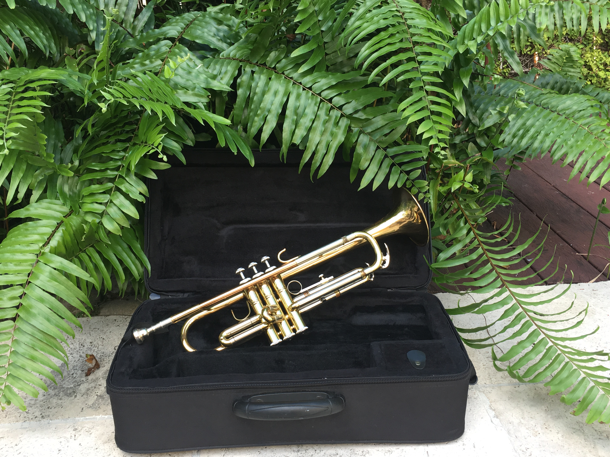
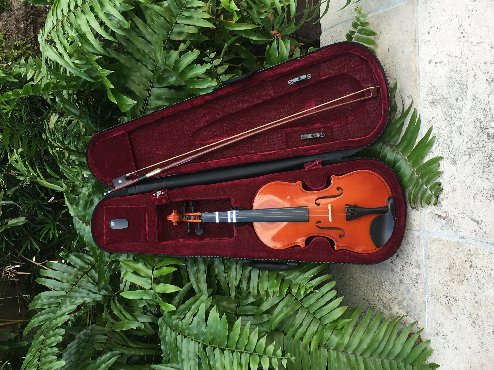
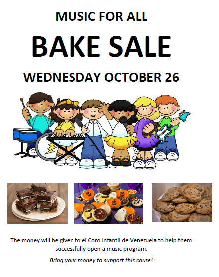
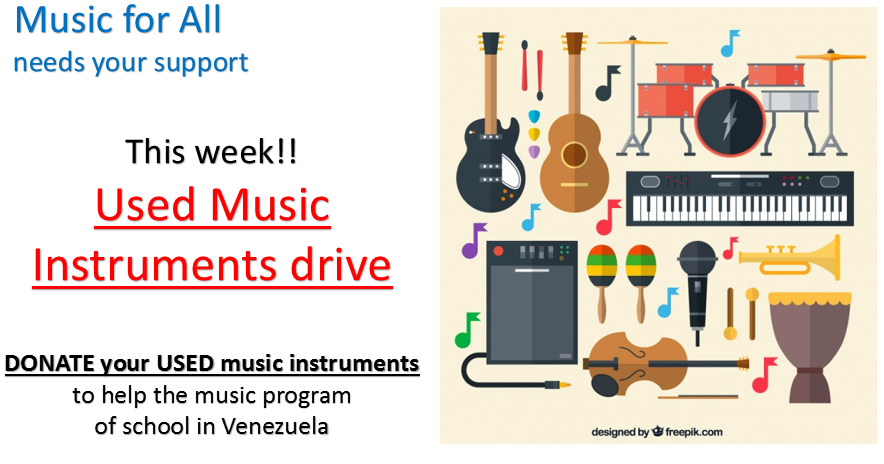

11/2016
We are so happy with these new donations! Thank you everyone for their contributions!

This Vito by Leblanc Clarinet was donated by Vivian Vergara:

Special thanks to Andreina Rosa for contributing with this trumpet and recorder:

Violin kindly donated by Isabella Otero:

10/26/2016
Thank you to everyone who contribute to our bake sale. We have collected $420! Special thanks to Dr. Busse for donating $50!

12/2015
Musicfor all instrument drive this week! thank you for contributing! We colected one violin and a flute!

Help us bring music to life.